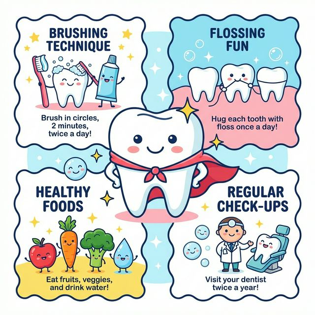
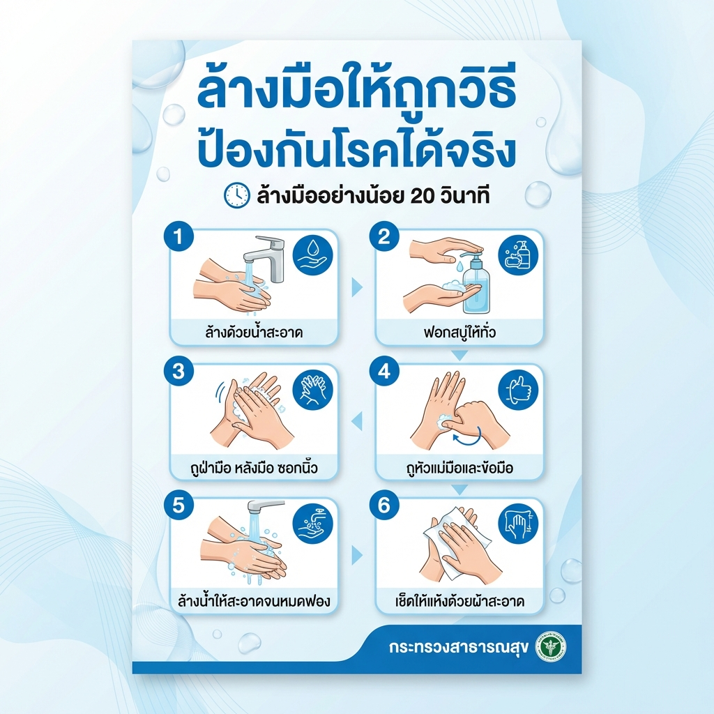
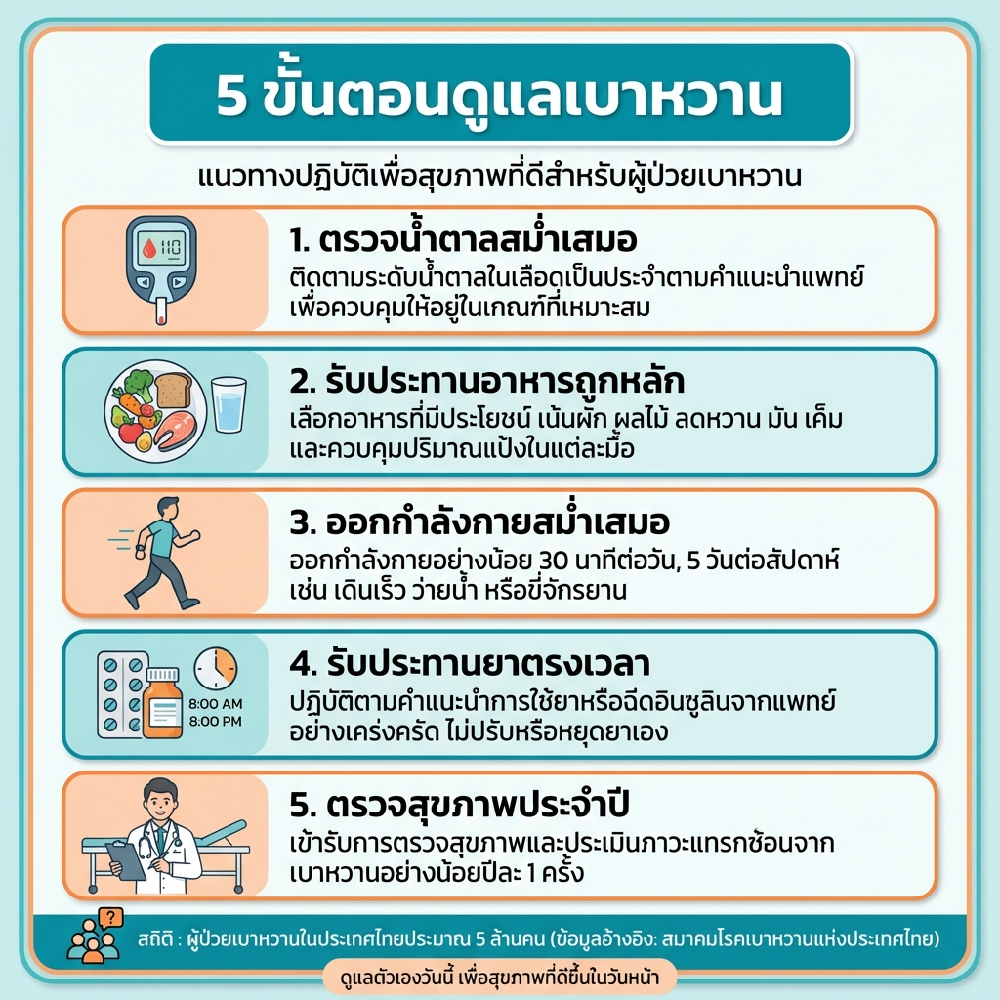
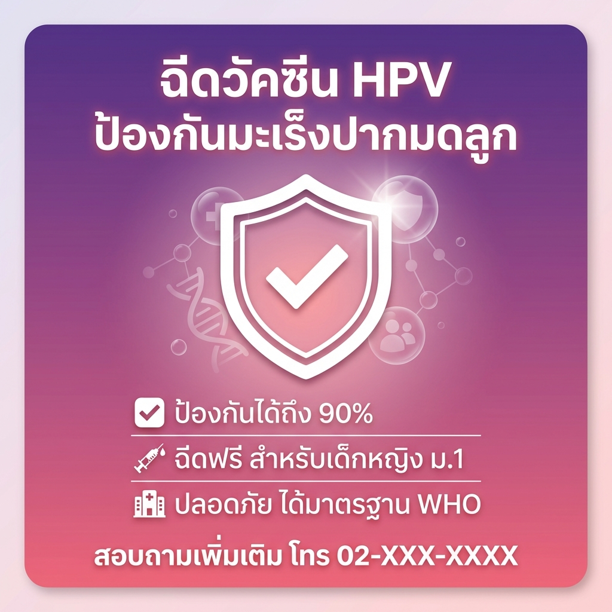
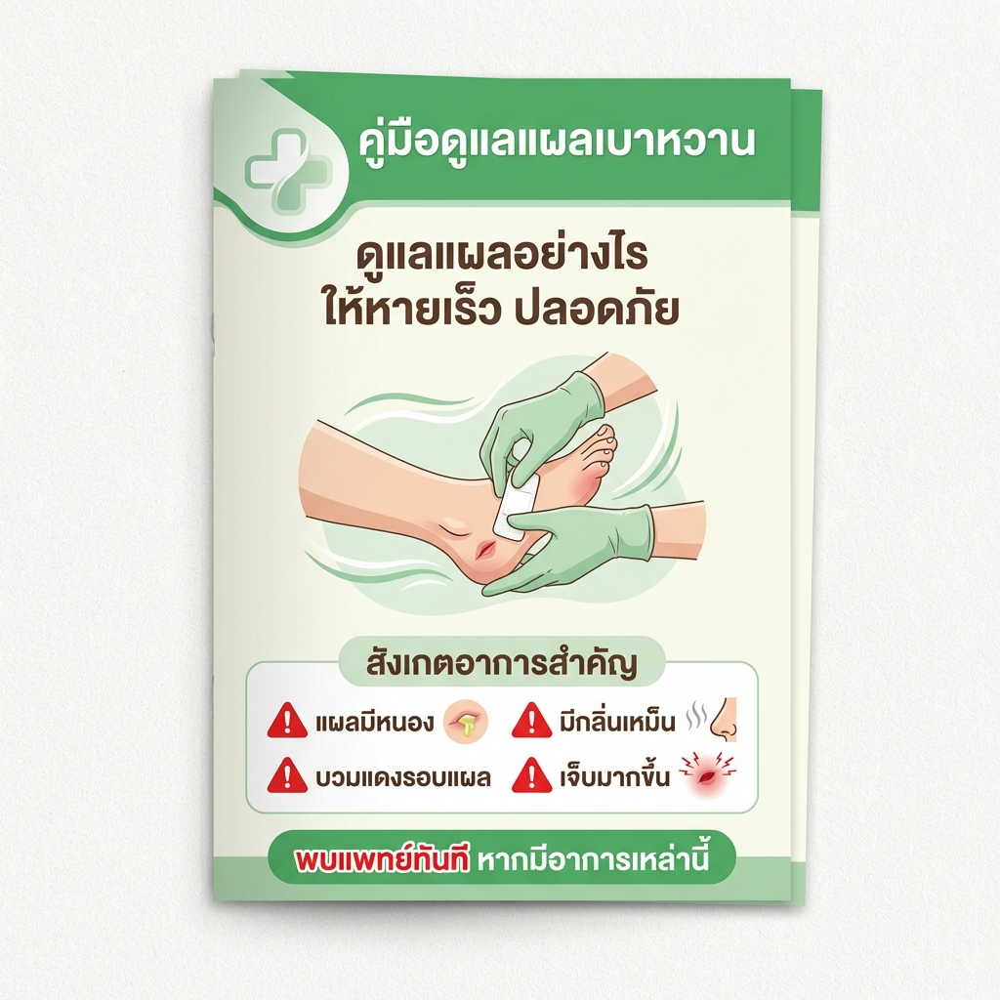
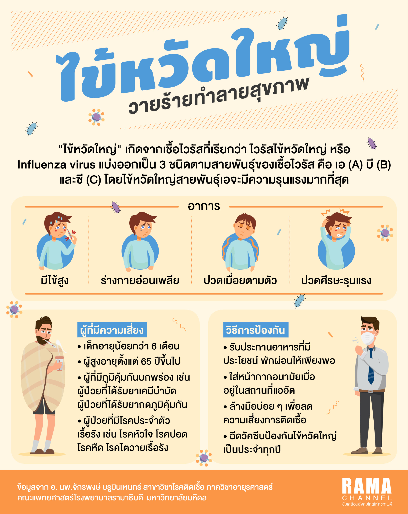

ยินดีต้อนรับสู่คู่มือการใช้งาน Google Gemini
คู่มือฉบับสมบูรณ์สำหรับการอบรมเชิงปฏิบัติการ "การประยุกต์ใช้ AI ในงานด้านสุขภาพ"
ปลดล็อกศักยภาพการทำงานด้วย Google Gemini
เลือกเนื้อหาที่สนใจ
- บทที่ 1: ทำความรู้จัก Gemini และความสามารถ
- บทที่ 2: เริ่มต้นใช้งานและ Gem Manager
- บทที่ 3: เทคนิค Prompt Engineering
- บทที่ 4: การประยุกต์ใช้งานจริง
- บทที่ 5: การสร้างภาพด้วย AI
- บทที่ 6: เทคนิค Image-to-Prompt (Vision)
- บทที่ 7: การสร้างวิดีโอด้วย AI
- บทที่ 8: สรุปและแหล่งเรียนรู้
- บทที่ 9: Gem Workshop - ทดลองใช้ Gem
- ส่งงาน: แบบฟอร์มส่งงานอบรม
1. บทนำสู่ Google Gemini
1.1 Gemini คืออะไร
Gemini เป็น AI รุ่นใหม่ล่าสุดของ Google ที่มีความสามารถในการประมวลผลข้อความ รูปภาพ และวิดีโอ
Google Gemini คือ Large Language Model (LLM) ที่พัฒนาโดย Google DeepMind มีความสามารถในการเข้าใจและสร้างเนื้อหาในหลากหลายรูปแบบ
1.2 ความสามารถของ Gemini
- การเข้าใจภาษาธรรมชาติ: สามารถเข้าใจบริบทและความหมายได้ดี
- การสร้างเนื้อหา: เขียนบทความ สรุปข้อมูล แปลภาษา
- การวิเคราะห์ข้อมูล: อ่านและวิเคราะห์ข้อมูลได้
- การสร้างภาพ (Imagen 3): สร้างภาพจากคำอธิบายคุณภาพสูง
Workshop: ลองใช้งานเบื้องต้น
💡 ใช้ทดสอบการตอบสนองเบื้องต้น
💡 ทดสอบความสามารถในการสรุป
💡 ทดสอบการช่วยวางแผนและจัดลำดับความสำคัญ
💡 ทดสอบการเขียนเอกสารเชิงวิชาชีพ
วัตถุประสงค์: ฝึกใช้ Prompt พื้นฐานกับ Gemini
ระยะเวลา: 15 นาที
- เปิด gemini.google.com
- ทดลองใช้ Prompt 1-4 ข้างต้น
- สังเกตความแตกต่างของคำตอบ
- ลองปรับแต่ง Prompt ให้เหมาะกับงานจริงของคุณ
2. การใช้งานพื้นฐาน
2.1 การสนทนากับ Gemini
Gemini สามารถจดจำบริบทการสนทนาได้ ลองพูดคุยต่อเนื่องเพื่อผลลัพธ์ที่ดีขึ้น
การสนทนากับ Gemini ทำได้ง่ายๆ เพียงพิมพ์คำถามหรือคำสั่ง และรอการตอบกลับ
- พิมพ์คำถามเป็นภาษาธรรมชาติ
- สามารถถามต่อเนื่องได้
- แก้ไขหรือขอให้ปรับปรุงคำตอบได้
2.2 Gem Manager
Gem คือ AI Assistant ที่ปรับแต่งได้ตามความต้องการ สามารถสร้าง Gem ที่มีบุคลิกและความเชี่ยวชาญเฉพาะทาง
ไปที่ gemini.google.com > Gem Manager > Create New Gem
Workshop: ทดลองสร้าง Gem
Gem (อัญมณี) คือฟีเจอร์ของ Google Gemini ที่ช่วยให้คุณสร้าง ผู้ช่วย AI เฉพาะทาง ที่ปรับแต่งตามความต้องการของคุณเอง โดย Gem จะจดจำคำสั่ง บริบท และบทบาทที่คุณกำหนดไว้ ทำให้ไม่ต้องพิมพ์ Prompt ยาวๆ ซ้ำๆ ทุกครั้ง
ตัวอย่าง Gem สำหรับงานสุขภาพ
💡 ใช้เป็น System Instruction สำหรับสร้างเนื้อหาสุขศึกษา
💡 ใช้สร้างสื่อประชาสัมพันธ์ทุกประเภท
💡 ใช้แปลเอกสารและสื่อสารกับผู้ป่วยต่างชาติ
วัตถุประสงค์: ฝึกการสร้าง Gem ที่เหมาะกับงานของตนเอง
ขั้นตอน:
- พิจารณางานที่ต้องใช้ AI สม่ำเสมอ (เช่น เขียนรายงาน, สร้างสื่อ PR, แปลภาษา)
- เขียนคำสั่งสำหรับ Gem โดยระบุ:
- บทบาทของ Gem
- ความเชี่ยวชาญที่ต้องการ
- รูปแบบการตอบ
- ข้อจำกัดหรือหลักการทำงาน
- สร้าง Gem ใน Gemini (Gem Manager)
- ทดสอบใช้งาน 3-5 ครั้ง
ตัวอย่างแนวคิด Gem: "ผู้ช่วยเขียนรายงานผู้ป่วย", "ผู้เชี่ยวชาญด้านโภชนาการ", "ที่ปรึกษาด้านการจัดกิจกรรมสุขภาพ"
สถานการณ์: คุณเป็นพยาบาลประจำหอผู้ป่วย มีบันทึกการดูแลผู้ป่วยตลอดกะ 12 ชั่วโมง ตอนนี้ต้องสรุปรายงานส่งต่อให้กะถัดไปภายใน 15 นาที
บันทึกผู้ป่วย (ตัวอย่าง):
งาน:
- เขียน Prompt เพื่อให้ Gemini สรุปบันทึกนี้เป็นรายงานสั้นๆ
- ทดลองถามหลายรูปแบบ: แบบสั้น vs แบบละเอียด
- เปรียบเทียบผลลัพธ์ทั้งสองแบบ
ตัวอย่าง Prompt: "สรุปบันทึกผู้ป่วยนี้เป็นรายงานส่งต่อกะ จัดเป็น 5 หัวข้อ: ข้อมูลผู้ป่วย, อาการ, การรักษา, ผลตรวจติดตาม, ข้อควรระวัง ความยาวไม่เกิน 150 คำ"
3. เทคนิค Prompt Engineering
3.1 หลักการเขียน Prompt ที่ดี
- Clear (ชัดเจน): ระบุสิ่งที่ต้องการชัดเจน
- Concise (กระชับ): ไม่ยาวเกินไป
- Context (บริบท): ให้ข้อมูลพื้นฐานที่จำเป็น
- Correct (ถูกต้อง): ตรวจสอบความถูกต้องของข้อมูล
3.2 Frameworks สำคัญ
สำหรับการสร้างสื่อประชาสัมพันธ์และสื่อสุขศึกษาที่มีคุณภาพ ใช้ Mega Prompt ประกอบด้วย 6 องค์ประกอบ:
- Task (ภารกิจ): ระบุงานที่ต้องการให้ชัดเจน
- Context (บริบท): อธิบายสถานการณ์และข้อจำกัด
- Example (ตัวอย่าง): ใส่รูปแบบผลลัพธ์ที่ต้องการ
- Persona (บทบาท): กำหนดให้ AI สวมบทบาทผู้เชี่ยวชาญ
- Format (รูปแบบ): ระบุรูปแบบ Output ที่ต้องการ
- Mood & Tone (โทน): กำหนดความทางการและบรรยากาศ
ตัวอย่าง Mega Prompt ครบ 6 องค์ประกอบ
💡 Mega Prompt ครบทุกองค์ประกอบจะให้ผลลัพธ์ที่ตรงความต้องการมากที่สุด
APE Framework
Action: ระบุสิ่งที่ต้องทำ
Purpose: วัตถุประสงค์
Expectation: ผลลัพธ์ที่คาดหวัง
💡 ลองใช้ APE Framework
RISEN Framework
Role: กำหนดบทบาท
Instructions: คำสั่งที่ชัดเจน
Steps: ขั้นตอนการทำงาน
End goal: เป้าหมายสุดท้าย
Narrowing: กำหนดขอบเขต
💡 ลองใช้ RISEN Framework
3.3 เทคนิคขั้นสูง
- Chain of Thought: ให้ AI คิดเป็นขั้นตอนก่อนตอบ เช่น "คิดทีละขั้นตอน"
- Few-shot Prompting: ให้ตัวอย่าง 2-3 ชิ้นก่อนถามสิ่งที่ต้องการ
- Role Stacking: กำหนดหลายบทบาทพร้อมกัน เช่น "คุณคือแพทย์ที่เป็นนักเขียน"
- Iterative Refinement: ขอให้ปรับปรุงผลลัพธ์ทีละขั้น
Case Studies: สถานการณ์จริงในงานสุขภาพ
5-6 ตัวอย่าง Prompt สำหรับสถานการณ์ที่พบบ่อยในงานด้านสุขภาพ สามารถนำไปปรับใช้ได้ทันที
Case Study 1: เขียนเอกสารให้ความรู้ผู้ป่วย
💡 ใช้ Mega Prompt สร้างเอกสารผู้ป่วยที่อ่านง่ายและปฏิบัติได้จริง
Case Study 2: สร้างสื่อ Social Media
💡 ใช้ Who-What-Why Framework สำหรับสื่อสารกลุ่มเป้าหมายเฉพาะ
Case Study 3: สร้างเนื้อหาอบรม
💡 ใช้ Context-Challenge-Resolution สำหรับการออกแบบการอบรม
Case Study 4: วิเคราะห์และรายงานข้อมูล
💡 ใช้ Goal-Strategy-Metrics Framework สำหรับรายงานเชิงวิเคราะห์
Case Study 5: ตอบคำถามญาติผู้ป่วย
💡 ใช้ Scenario-Action-Impact สำหรับการสื่อสารกับญาติผู้ป่วย
Case Study 6: สร้างเครื่องมือประเมิน
💡 ใช้ Role-Objective-Constraints สำหรับการออกแบบเครื่องมือทางการพยาบาล
4. การประยุกต์ใช้งานจริง
4.1 การเขียนเอกสาร
Gemini สามารถช่วยเขียนเอกสารได้หลากหลายประเภท:
- รายงาน และบันทึก
- สรุปการประชุม
- เอกสารให้ความรู้
- อีเมลและจดหมาย
4.2 การวิเคราะห์ข้อมูล
อัปโหลดไฟล์ข้อมูล หรือวางข้อมูลลงไป แล้วขอให้วิเคราะห์ สรุป หรือหา insight
4.3 ข้อควรระวัง
- Hallucination: AI อาจสร้างข้อมูลที่ไม่ถูกต้อง
- ความเป็นส่วนตัว: อย่าใส่ข้อมูลส่วนบุคคลที่ละเอียดอ่อน
- ตรวจสอบเสมอ: ข้อมูลทางการแพทย์ต้องตรวจสอบกับแหล่งที่เชื่อถือได้
Workshop: ทดลองใช้งานจริง
💡 ใช้เขียนสรุปการประชุม
วัตถุประสงค์: วิเคราะห์กรณีศึกษาและออกแบบการแก้ปัญหาด้วย Gemini
จัดกลุ่ม: แบ่งกลุ่มละ 3-4 คน แต่ละกลุ่มได้ case study ต่างกัน
Case Studies:
"คุณรับผิดชอบพื้นที่ห่างไกล 15 หมู่บ้าน ต้องจัดอบรมผู้ดูแลผู้สูงอายุเรื่อง 'การป้องกันการหกล้ม' ให้กับ อสม. 50 คน แต่มีงบจำกัด แบบฝึกหัดและเอกสารต้องทำเอง"
"โรงเรียนมอบหมายให้สร้างสื่อสุขศึกษาเรื่อง 'พฤติกรรมสุขภาพวัยรุ่น' สำหรับนักเรียน ม.ต้น 300 คน ต้องสนุก ดึงดูด และนักเรียนจดจำได้ง่าย"
"แผนกของคุณมีผู้ป่วยเบาหวานเพิ่มขึ้นมาก ต้องการจัดคลินิกให้ความรู้แต่ขาดแคลนเจ้าหน้าที่ จึงต้องสร้างสื่อให้ความรู้ที่ผู้ป่วยสามารถเรียนรู้ด้วยตัวเองได้"
"คลินิกเปิดบริการใหม่ ต้องการประชาสัมพันธ์ผ่าน Social Media โฆษณาท้องถิ่น และแผ่นพับ แต่ไม่มีทีมออกแบบและงบจำกัด"
งานของแต่ละกลุ่ม:
- วิเคราะห์ปัญหา (5 นาที)
- ออกแบบวิธีแก้ปัญหาด้วย Gemini - ระบุว่าจะใช้ Gemini ช่วยอะไรบ้าง (10 นาที)
- สร้าง Prompt ตัวอย่างอย่างน้อย 2 Prompt (10 นาที)
- ทดสอบกับ Gemini จริงและเก็บผลลัพธ์ (10 นาที)
- เตรียมนำเสนอ (5 นาที)
การนำเสนอ (แต่ละกลุ่ม 5 นาที):
- ปัญหาและความท้าทาย
- วิธีแก้ปัญหาด้วย Gemini
- Prompt ที่ใช้ และผลลัพธ์
- ข้อดีข้อเสียของวิธีนี้
ระยะเวลา: 45 นาที (40 นาทีทำงาน + 20 นาทีนำเสนอ)
💡 ตัวอย่างการใช้ Context-Challenge-Resolution Framework
Case Studies: สถานการณ์จริงในการประยุกต์ใช้งาน
5-6 ตัวอย่างการนำ Gemini ไปใช้งานจริงในบริบทต่างๆ พร้อม Prompt ที่พร้อมใช้งาน
Case Study 1: เขียนรายงานประจำวัน/กะ
💡 ใช้สรุปรายงานกะให้กระชับและครบถ้วน
Case Study 2: เขียนอีเมล/จดหมายทางการ
💡 ใช้เขียนอีเมลทางการแพทย์ที่ได้ผลลัพธ์
Case Study 3: สรุปข้อมูลผู้ป่วยสำหรับส่งต่อ
💡 ใช้สรุปประวัติส่งต่อผู้ป่วยให้ครบถ้วนในเวลาจำกัด
Case Study 4: จัดทำแบบฟอร์ม/เอกสาร
💡 ใช้ออกแบบเครื่องมือทางการพยาบาลที่ใช้งานจริง
Case Study 5: วางแผนกิจกรรม/โครงการ
💡 ใช้วางแผนโครงการสุขภาพที่มีโครงสร้างครบถ้วน
Case Study 6: สร้างเนื้อหาให้ความรู้
💡 ใช้ออกแบบการเรียนการสอนที่เหมาะกับกลุ่มเป้าหมาย
5. การสร้างภาพด้วย Google Gemini
Google Gemini มีความสามารถในการสร้างภาพคุณภาพสูงจากคำอธิบาย (Text-to-Image) ผ่านการผสานรวมกับเทคโนโลยี Imagen ทำให้สามารถสร้างภาพที่มีรายละเอียด สีสัน และองค์ประกอบตรงตามที่ต้องการ เหมาะสำหรับการสร้างสื่อการสอน Infographic โปสเตอร์ และภาพประกอบต่างๆ
5.1 โครงสร้าง Prompt สร้างภาพ
เพื่อให้ได้ภาพที่ตรงตามความต้องการ คำสั่ง (Prompt) ควรครอบคลุมองค์ประกอบสำคัญ 7 ประการ ดังนี้:
- Subject (หัวข้อหลัก): ระบุสิ่งที่ต้องการให้อยู่ในภาพอย่างชัดเจน
- Action (การกระทำ): บอกเล่าเรื่องราวว่าตัวละครกำลังทำอะไร
- Style (สไตล์): กำหนดรูปแบบทางศิลปะ เช่น ภาพการ์ตูนหรือภาพสมจริง
- Mood/Tone (บรรยากาศ): สื่ออารมณ์ของภาพ เช่น อบอุ่น สงบ สดใส
- Color (สีสัน): สีที่ต้องการเน้น หรือโทนสีโดยรวม
- Composition (องค์ประกอบ): การจัดวางมุมมอง เช่น แนวตั้ง แนวนอน
- Details (รายละเอียด): รายละเอียดเพิ่มเติมเพื่อให้ภาพสมบูรณ์
[สิ่งหลักที่ต้องการ] + [การกระทำ/ท่าทาง] + [สถานที่/ฉากหลัง] + [สไตล์] + [สีสัน] + [บรรยากาศ] + [มุมมอง] + [รายละเอียดเพิ่มเติม]
💡 ตัวอย่างนี้ครอบคลุมทั้ง 7 องค์ประกอบในประโยคเดียว
5.2 สไตล์ภาพและสีสัน
สไตล์ที่นิยมสำหรับงานสุขภาพ
- Flat Design Illustration: กราฟิกแบบแบน สีสันสดใส เหมาะสำหรับ Infographic
- Minimalist: เน้นความเรียบง่าย สื่อความหมายชัดเจน
- Modern Healthcare Illustration: ความเป็นมืออาชีพ น่าเชื่อถือ
- Friendly Cartoon: สร้างความรู้สึกเป็นมิตร เข้าถึงง่าย เหมาะกับเด็กและครอบครัว
- Clean Professional: สะอาดตา เป็นทางการ เหมาะกับงานวิชาการ
สีที่มีความหมายในงานสุขภาพ
- 🔵 สีน้ำเงิน: ความน่าเชื่อถือ ความสงบ ความเป็นมืออาชีพ
- 🟢 สีเขียว: สุขภาพ ธรรมชาติ ความสดชื่น
- ⚪ สีขาว: ความสะอาด ความบริสุทธิ์
- 🟠 สีส้ม/สีเหลือง: พลังงาน ความอบอุ่น การกระตุ้น
- 🟣 สีม่วง: ความคิดสร้างสรรค์ การดูแลเอาใจใส่
5.3 ตัวอย่าง Prompt สำหรับงานด้านสุขภาพ
การสื่อสารด้านการแพทย์
💡 ระบุรายละเอียดครบ: สไตล์ + ตัวละคร + สถานที่ + อุปกรณ์ + สี + บรรยากาศ
ตัวอย่างผลลัพธ์จาก Prompt นี้
💡 สื่อสุขศึกษาเรื่องความปลอดภัยอาหาร
💡 เหมาะสำหรับสร้างสื่อทันตกรรมสำหรับเด็ก

ตัวอย่างผลลัพธ์จาก Prompt นี้
Infographic ด้านโรคติดต่อ
💡 Infographic เตือนภัยโรคไข้เลือดออก สำหรับชุมชน

ตัวอย่างผลลัพธ์จาก Prompt นี้
5.4 เทคนิคการปรับปรุง Prompt
หากภาพที่ได้ไม่ตรงความต้องการ สามารถปรับปรุงได้หลายวิธี:
- เพิ่มรายละเอียดเฉพาะ: ระบุสีเสื้อกาวน์ อายุของตัวละคร หรือเพิ่มรอยยิ้ม
- ปรับสไตล์: เปลี่ยนให้เป็นการ์ตูนมากขึ้น หรือปรับเส้นสายให้นุ่มนวลลง
- เปลี่ยนมุมมองและองค์ประกอบ: ปรับมุมกล้อง หรือจัดวางตำแหน่งตัวละครใหม่
- ความถูกต้องทางกายวิภาค: ตรวจสอบจากแหล่งอ้างอิงที่น่าเชื่อถือ
- ความเหมาะสมทางวัฒนธรรม: คำนึงถึงความหลากหลายของผู้คน
- สัญลักษณ์ที่เป็นสากล: ใช้สัญลักษณ์ที่เข้าใจง่าย
- ความชัดเจน: ไม่สร้างความเข้าใจผิด
- ลิขสิทธิ์: ตรวจสอบสิทธิ์การใช้งานและอ้างอิงแหล่งที่มา
- ใช้คำศัพท์เฉพาะทาง: ภาษาอังกฤษมีผลลัพธ์ดีกว่า ใช้ศัพท์ทางศิลปะ/การออกแบบ
- ระบุสไตล์ชัดเจน: อ้างอิงสไตล์ที่รู้จัก เช่น "medical textbook illustration", "modern infographic"
- กำหนดสัดส่วน: ระบุ "vertical poster", "horizontal banner", "square social media post"
- ทดลองหลายรอบ: สร้างหลายเวอร์ชันและเลือกที่ดีที่สุด
- บันทึก Prompt ที่ได้ผล: เก็บไว้ใช้ซ้ำและปรับแต่งต่อ
- ใช้ Reference: อธิบายอ้างอิงภาพที่มีอยู่ เช่น "like WHO infographic style"
5.5 ตัวอย่างผลลัพธ์จากการใช้งานจริง
ต่อไปนี้คือตัวอย่าง Prompt สำหรับสื่อ PR ต่างๆ ที่สามารถสร้างได้ใน 5-10 นาที:
💡 เหมาะสำหรับติดในโรงพยาบาลหรือสถานีอนามัย

ตัวอย่างผลลัพธ์จาก Prompt นี้
💡 เหมาะสำหรับแผ่นพับแจก หรือโพสต์ Social Media

ตัวอย่างผลลัพธ์จาก Prompt นี้
💡 รูปแบบ Square เหมาะสำหรับ Instagram และ Facebook

ตัวอย่างผลลัพธ์จาก Prompt นี้
💡 เหมาะเป็นคู่มือแจกผู้ป่วยนำกลับไปดูแลตนเองที่บ้าน

ตัวอย่างผลลัพธ์จาก Prompt นี้
Workshop: สร้างภาพสุขภาพ
สถานการณ์: ต้องจัดอบรมผู้ดูแลผู้ป่วยเรื่อง "วิธีเคลื่อนย้ายผู้ป่วยอย่างปลอดภัย" อย่างเร่งด่วน แต่ขาดแคลนสื่อประกอบ
เนื้อหาที่ต้องมี:
- หลักการเคลื่อนย้ายผู้ป่วยที่ถูกต้อง (4 หลักการ)
- ท่าทางที่ถูกต้องของผู้ช่วย
- ข้อควรระวังสำคัญ
- ข้อห้าม
ขั้นตอน: วิเคราะห์ข้อมูล → เขียน Prompt → สร้างภาพ → ประเมินผล → ปรับปรุง
💡 Prompt เฉลยสำหรับแบบฝึกหัดด้านบน
โจทย์: สร้างสื่อสุขภาพที่แปลกใหม่และน่าสนใจที่สุด! เลือก 1 ประเภท:
- กลอนรณรงค์สุขภาพ - ใช้ Gemini สร้างกลอนสุภาพ 4 บท เรื่องการล้างมือ
- เพลงสั้นสุขภาพ - สร้างเนื้อเพลงสั้นๆ (1 นาที) รณรงค์กินผัก
- เกมทายปัญหา - สร้างคำถาม 10 ข้อเกี่ยวกับวัคซีน แบบสนุกๆ
- นิทานสุขภาพ - สร้างนิทานสั้นสอนเด็กเรื่องการแปรงฟัน
- Comics Strip - เนื้อหา 4-panel comics เรื่องการออกกำลังกาย
💡 เหมาะสำหรับ Social Media สร้างความสนุกในการเรียนรู้
โจทย์: สร้างสื่อสำหรับแคมเปญ "สุขภาพดีเริ่มที่บ้าน" จำนวน 5 ชิ้น:
- โปสเตอร์หลัก - ภาพรวมแคมเปญ
- Infographic - 5 กิจกรรมเพื่อสุขภาพที่ทำได้ที่บ้าน
- Social Media Post - ภาพสี่เหลี่ยมจัตุรัสสำหรับ Facebook/Instagram
- Flyer - แผ่นพับข้อมูล 2 หน้า
- Banner - สำหรับหน้าเว็บไซต์
💡 Prompt ตัวอย่างสำหรับโปสเตอร์หลักแคมเปญ
Case Studies: สถานการณ์จริงในการสร้างภาพ
5-6 ตัวอย่างสถานการณ์การสร้างภาพสื่อสุขภาพ พร้อม Prompt ที่พร้อมใช้งาน
Case Study 1: โปสเตอร์รณรงค์ด่วน
💡 โปสเตอร์รณรงค์ที่สื่อสารกับชุมชนได้จริง
Case Study 2: Infographic โภชนาการ
💡 Infographic ให้ความรู้โภชนาการที่เข้าใจง่าย
Case Study 3: สื่อสำหรับแม่และเด็ก
💡 สื่อสำหรับแม่และเด็กต้องอบอุ่นและน่าเชื่อถือ
Case Study 4: สื่อส่งเสริมการออกกำลังกาย
💡 สื่อกระตุ้นให้ผู้สูงอายุอยากออกกำลังกาย
Case Study 5: สื่อให้ความรู้ในโรงพยาบาล
💡 สื่อ wayfinding ในโรงพยาบาลต้องชัดเจนและมืออาชีพ
Case Study 6: สื่อสำหรับ Social Media
💡 สื่อ Social Media ต้องดึงดูดและอ่านง่ายในเวลาสั้น
6. เทคนิคการแปลงรูปภาพเป็น Prompt (Image-to-Prompt)
Google Gemini มีความสามารถพิเศษในการ "มองเห็น" และวิเคราะห์รูปภาพ (Vision) ซึ่งช่วยให้สามารถ:
- อธิบายรูปภาพ — บรรยายสิ่งที่เห็นในภาพอย่างละเอียด
- วิเคราะห์การออกแบบ — แยกแยะองค์ประกอบ สี สไตล์ การจัดวาง
- สร้าง Prompt จากภาพ — แปลงภาพที่ชอบกลับเป็น prompt เพื่อสร้างภาพใหม่ในสไตล์เดียวกัน
- เปรียบเทียบภาพ — หาความเหมือน/ต่างระหว่างภาพ
- อ่านข้อความจากภาพ — OCR จากภาพถ่ายหรือเอกสาร
6.1 การวิเคราะห์ภาพ 3 ระดับ
ระดับ 1: การบรรยายภาพเบื้องต้น
💡 อัพโหลดรูปภาพพร้อม Prompt นี้เพื่อให้ Gemini บรรยายภาพ
ระดับ 2: การวิเคราะห์การออกแบบ
💡 ใช้วิเคราะห์ Infographic หรือโปสเตอร์ที่ชอบ เพื่อเรียนรู้เทคนิค
ระดับ 3: การสร้าง Prompt จากภาพ
💡 Reverse Engineering! แปลงภาพที่ชอบกลับเป็น prompt เพื่อสร้างภาพในสไตล์คล้ายกัน
6.2 การวิเคราะห์สื่อเพื่อปรับปรุง
💡 ใช้ Gemini เป็น "นักวิจารณ์สื่อ" เพื่อปรับปรุงผลงาน
💡 ใช้สำหรับปรับปรุงสื่อเก่าให้ทันสมัย
6.3 กรณีศึกษา: สร้างโปสเตอร์สไตล์เดียวกัน
สมมุติว่าเห็นโปสเตอร์สุขภาพที่สวยมากและต้องการสร้างโปสเตอร์ในแนวเดียวกันแต่เปลี่ยนเนื้อหา ทำได้ 3 ขั้นตอน:
- ขั้นตอน 1: อัพโหลดภาพต้นแบบ + ใช้ Prompt ระดับ 3 เพื่อแปลงเป็น Prompt
- ขั้นตอน 2: แก้ไข Prompt — เปลี่ยนเนื้อหาแต่คง Style, Color, Mood เดิม
- ขั้นตอน 3: สร้างภาพใหม่จาก Prompt ที่แก้ไข แล้วปรับแต่งเพิ่มเติม
Usecase จริง: Infographic ไข้หวัดใหญ่ โรงพยาบาลรามาธิบดี
ตัวอย่างโปสเตอร์สุขศึกษาจากโรงพยาบาลรามาธิบดี — ใช้เป็นภาพต้นแบบสำหรับฝึก Image-to-Prompt

ขั้นตอนที่ 1 — วิเคราะห์การออกแบบ: อัพโหลดรูปนี้ไปยัง Gemini พร้อม Prompt:
ขั้นตอนที่ 2 — สร้าง Prompt ใหม่: ขอให้ Gemini เขียน Prompt สำหรับสร้างโปสเตอร์ในสไตล์เดียวกัน แต่เปลี่ยนหัวข้อเป็น "ไข้เลือดออก" หรือ "โรคเบาหวาน"
💡 เปลี่ยน [หัวข้อ A] และ [หัวข้อ B] ตามต้องการ แล้วอัพโหลดรูปประกอบ
6.4 สร้างสื่อ PR จากภาพถ่าย
💡 ถ่ายรูปกิจกรรม แล้วให้ Gemini ช่วยเขียน PR ได้ทันที!
💡 เปลี่ยนรูปถ่ายกิจกรรมให้เป็น Carousel Post สวยๆ
Workshop: ฝึก Image-to-Prompt
ขั้นตอน:
- ขั้นตอน 1: ค้นหาภาพ Infographic สุขภาพที่ชื่นชอบจากอินเทอร์เน็ต
- ขั้นตอน 2: อัพโหลดไปยัง Gemini พร้อมใช้ Prompt ระดับ 3 เพื่อสร้าง prompt
- ขั้นตอน 3: แก้ไข prompt เปลี่ยนหัวข้อเป็นเรื่องที่ต้องการ
- ขั้นตอน 4: สร้างภาพใหม่จาก prompt ที่แก้ไข
ขั้นตอน:
- ถ่ายรูปสิ่งที่อยู่รอบตัว หรือใช้รูปจากกิจกรรมที่ผ่านมา
- อัพโหลดไป Gemini พร้อม Prompt เขียนข่าว/PR
- สร้างโพสต์พร้อมลงทั้ง Facebook, Instagram, และ LINE
เป้าหมาย: สร้างคอนเทนต์ PR ครบ 3 แพลตฟอร์มจากรูปเดียว
Case Studies: สถานการณ์จริงในการวิเคราะห์ภาพ
5-6 ตัวอย่างการนำ Image-to-Prompt ไปใช้งานจริง พร้อม Prompt ที่พร้อมใช้งาน
Case Study 1: คัดลอกสไตล์โปสเตอร์ที่ชอบ
💡 ใช้สำหรับ "Reverse Engineering" โปสเตอร์ที่ชอบ
Case Study 2: สร้างเนื้อหา PR จากรูปถ่ายกิจกรรม
ถ่ายรูปกิจกรรม แล้วให้ Gemini ช่วยเขียนข่าวครบเซ็ตได้ทันที
Case Study 3: ให้คะแนนและปรับปรุงสื่อเก่า
💡 ใช้ปรับปรุงสื่อเก่าให้ทันสมัยโดยไม่ต้องเริ่มจากศูนย์
Case Study 4: สร้าง Carousel Post จากหลายรูป
💡 ใช้สร้าง Carousel Post ที่เล่าเรื่องได้สนุกจากรูปหลายรูป
Case Study 5: วิเคราะห์แผนที่ Infographic
💡 ใช้สร้าง Infographic สถิติในสไตล์เดียวกัน
Case Study 6: อ่านและแก้ไขข้อความจากภาพ
💡 ใช้ OCR แผ่นพับเก่าแล้วปรับปรุงให้ดีขึ้น
ตัวอย่างแผ่นพับที่ใช้ฝึก OCR และปรับปรุงเนื้อหา
7. การสร้างวิดีโอด้วย AI
เทคโนโลยี AI สร้างวิดีโอ (Text-to-Video) กำลังพัฒนาอย่างรวดเร็ว Google นำเสนอเครื่องมือ 2 ตัวสำคัญ: Google Veo สำหรับสร้างวิดีโอสั้น และ Google Flow สำหรับสร้างวิดีโอยาวแบบมืออาชีพ ทั้งสองเครื่องมือมีศักยภาพสูงในการสร้างสื่อวิดีโอสุขภาพ
7.1 Google Veo
Veo เป็น AI สร้างวิดีโอจากข้อความ (Text-to-Video) พัฒนาโดย Google DeepMind สามารถสร้างวิดีโอความละเอียดสูงจาก prompt ที่เราพิมพ์
ความสามารถของ Veo
- ความละเอียดสูง: รองรับ 1080p และ 4K (Veo 2)
- ความยาว: สร้างวิดีโอได้หลายนาที
- Cinematic Control: กำหนดมุมกล้อง, แสง, สไตล์ได้
- Physics Understanding: เข้าใจการเคลื่อนไหวจริง
7.2 Google Flow
Google Flow รวมเทคโนโลยี AI หลายตัวเข้าด้วยกัน เหมาะสำหรับสร้างวิดีโอแบบมืออาชีพ
เทคโนโลยีใน Flow
- Veo 3.1: สร้างวิดีโอ 4K พร้อมเสียง
- Imagen 4: สร้างภาพและตัวละครคงที่
- Gemini AI: เข้าใจบริบทและสร้างเรื่องราว
เหมาะกับใคร
- Content Creators สำหรับ Social Media
- นักการตลาดสร้างโฆษณา
- ครู-อาจารย์สร้างสื่อการสอน
- บุคลากรสาธารณสุขสร้างสื่อให้ความรู้
7.3 เทคนิค Prompt สำหรับวิดีโอ
- Subject (ตัวละคร): ใคร/อะไร — ระบุรายละเอียดชัดเจน เช่น "พยาบาลหญิงในชุดสีฟ้า"
- Action (การกระทำ): เคลื่อนไหวอย่างไร — ใช้คำกริยาที่ชัดเจนและเฉพาะเจาะจง
- Environment (สภาพแวดล้อม): ที่ไหน เวลาอะไร — ระบุสถานที่ แสง และบรรยากาศ
- Camera (เทคนิคกล้อง): มุมมอง การเคลื่อนไหวกล้อง — close-up, tracking, drone, etc.
- Style (สไตล์): โทนและอารมณ์ — cinematic, documentary, warm, encouraging
เทคนิคการอธิบายการเคลื่อนไหวมนุษย์
- ท่าทางทั่วไป: "gently smiling", "nodding reassuringly", "speaking warmly"
- มือ/แขน: "demonstrating handwashing technique", "pointing at chart", "holding patient's hand"
- การเคลื่อนที่: "walking through hospital corridor", "leaning towards patient"
- ปฏิสัมพันธ์: "teaching a group of nurses", "examining elderly patient"
Camera Movements ที่ใช้บ่อย
- Dolly shot: กล้องเคลื่อนเข้า/ออก — เพิ่มความดราม่า
- Pan: กล้องหมุนซ้าย/ขวา — เผยสถานที่
- Tilt: กล้องเงยขึ้น/ก้มลง — แสดงขนาด
- Tracking shot: ติดตามวัตถุ — สร้างความต่อเนื่อง
- Close-up: ถ่ายใกล้ — เน้นรายละเอียดและอารมณ์
- Slow motion: เคลื่อนไหวช้า — เน้นความสำคัญของจังหวะ
- Time-lapse: วิดีโอเร่งเวลา — แสดงกระบวนการ
Workshop: สร้างวิดีโอสุขภาพ
💡 ใช้สร้างคลิปสอนล้างมือแบบมืออาชีพ
💡 ใช้เป็น intro สำหรับนำเสนองาน
💡 ใช้สร้างคลิปส่งเสริมงานเยี่ยมบ้านผู้ป่วย
💡 ใช้สร้าง animation อธิบายกระบวนการทางการแพทย์
โจทย์: สร้าง Prompt สำหรับวิดีโอ TikTok เรื่อง "กินสะอาด อาหารปลอดภัย" ความยาว 15 วินาที
เนื้อหาที่ต้องมี:
- ภาพอาหารสะอาดหลากหลายสีสัน
- การเคลื่อนไหวที่น่าสนใจ (การจัดจาน, การล้างผัก)
- บรรยากาศสดใส ร่าเริง
- สไตล์ทันสมัยดึงดูดวัยรุ่น
💡 ตัวอย่าง Prompt เฉลยสำหรับแบบฝึกหัด TikTok
- ข้อจำกัดทั่วไป: AI ยังไม่สามารถสร้างวิดีโอที่มีรายละเอียดซับซ้อนหรือข้อความภาษาไทยในวิดีโอได้ดีเท่ากับการถ่ายจริง
- ความถูกต้อง: ตรวจสอบความถูกต้องทางการแพทย์ก่อนนำไปใช้
- ลิขสิทธิ์: ระบุเสมอว่าวิดีโอสร้างจาก AI
- ข้อจำกัดเชิงเทคนิค: ไม่ควรใช้เป็นวิดีโอฝึกทักษะทางการแพทย์โดยตรง ควรเป็นสื่อเสริมเท่านั้น
Case Studies: สถานการณ์จริงในการสร้างวิดีโอ
5-6 ตัวอย่างสถานการณ์การสร้างวิดีโอสุขภาพ พร้อม Prompt ที่พร้อมใช้งาน
Case Study 1: วิดีโอสาธิตทักษะการพยาบาล
วิดีโอสอนทักษะต้องเห็นท่าทางชัดเจน
Case Study 2: วิดีโอรณรงค์สั้น Social Media
วิดีโอ Social Media ต้องจับตาในเวลาสั้น
Case Study 3: วิดีโอแนะนำบริการโรงพยาบาล
วิดีโอแนะนำบริการต้องสร้างความมั่นใจ
Case Study 4: วิดีโออธิบายกระบวนการทางการแพทย์
Animation ทางการแพทย์ต้องสมจริงแต่ไม่ทำให้กลัว
Case Study 5: วิดีโอส่งเสริมสุขภาพ
วิดีโอส่งเสริมสุขภาพต้องสร้างแรงบันดาลใจ
Case Study 6: วิดีโอให้ความรู้เรื่องโรค
วิดีโอให้ความรู้ต้องกระชับ เข้าใจง่าย
8. สรุปและแหล่งเรียนรู้เพิ่มเติม
- ทำความรู้จัก Google Gemini และความสามารถ
- การใช้งานพื้นฐานและ Gem Manager
- เทคนิค Prompt Engineering
- การประยุกต์ใช้งานจริง
- การสร้างภาพด้วย AI (16+ Prompt)
- เทคนิค Image-to-Prompt (Vision)
- การสร้างวิดีโอด้วย Google Veo และ Flow
แหล่งเรียนรู้เพิ่มเติม
- gemini.google.com - เข้าใช้งาน Gemini
- ai.google.dev - เอกสารสำหรับนักพัฒนา
- Google VideoFX - ทดลองสร้างวิดีโอด้วย Veo
ลองนำความรู้ที่ได้ไปใช้ในงานประจำวัน เริ่มจากงานง่ายๆ แล้วค่อยๆ พัฒนา!
9. Gem Workshop - ทดลองใช้ Gem
Gem (อัญมณี) คือผู้ช่วย AI ที่ปรับแต่งได้ตามความต้องการของคุณ โดย Gem จะจดจำบริบท และบทบาทที่คุณกำหนดไว้ ทำให้ไม่ต้องพิมพ์ Prompt ยาวๆ ซ้ำๆ ทุกครั้ง
ทดลองใช้ Gem ตัวอย่าง
คลิกที่ลิงก์ด้านล่างเพื่อทดลองใช้ Gem ที่สร้างไว้ล่วงหน้า:
Gem 1: Nurse PR Prompt - ผู้ช่วยงานประชาสัมพันธ์พยาบาล
ความสามารถ:
- เขียนข่าวและบทความประชาสัมพันธ์งานพยาบาล
- สร้างเนื้อหาโซเชียลมีเดียวสำหรับโรงพยาบาล/คลินิก
- ออกแบบโปสเตอร์รณรงค์สุขภาพ
- เขียนสคริปต์วิดีโอสั้นสำหรับให้ความรู้ผู้ป่วย
ตัวอย่างการใช้: "ช่วยเขียนโพสต์ Facebook รณรงค์วันงดสูบบุหรี่โลก สำหรับโรงพยาบาล"
เปิด GemGem 2: Medical Infographic Creator - ระบบสร้าง Infographic เครื่องมือแพทย์
ความสามารถ:
- สร้างคำอธิบายสำหรับสร้างภาพ Infographic เครื่องมือแพทย์
- อธิบายขั้นตอนการใช้อุปกรณ์ทางการแพทย์แบบ step-by-step
- ออกแบบสื่อให้ความรู้สำหรับผู้ป่วยและญาติ
- สร้างคู่มือการดูแลตนเองสำหรับผู้ป่วย
ตัวอย่างการใช้: "ช่วยสร้าง Infographic อธิบายวิธีใช้เครื่องวัดความดันโลหิตแบบดิจิตอล"
เปิด GemGem 3: Herbal Storyteller - ผู้เล่าเรื่องสมุนไพรไทย
ความสามารถ:
- เล่าเรื่องสมุนไพรไทยแบบน่าสนใจ พร้อมสร้าง Prompt ภาพ 3D
- อธิบายสรรพคุณและประโยชน์ของสมุนไพร
- ให้คำแนะนำการใช้สมุนไพรอย่างปลอดภัย
- สร้างเนื้อหาสื่อสารสมุนไพรสำหรับชุมชน
ตัวอย่างการใช้: "เล่าเรื่องขิงและสร้าง Prompt ภาพ 3D น่ารักของขิงเป็นตัวละคร"
เปิด Gemวัตถุประสงค์: ทดลองใช้ Gem ที่สร้างไว้ล่วงหน้าและสังเกตผลลัพธ์
ระยะเวลา: 20 นาที
- เลือก Gem หนึ่งตัวจาก 3 ตัวด้านบน
- ทดลองพิมพ์คำถามหรือคำสั่งที่เกี่ยวข้องกับงานของคุณ
- สังเกตว่า Gem ตอบสนองแตกต่างจาก Gemini ทั่วไปอย่างไร
- ลองใช้อีก 2 Gem ที่เหลือและเปรียบเทียบผลลัพธ์
- คิดว่า Gem ใดเหมาะกับงานของคุณมากที่สุด
- Gem จะจดจำบริบทที่กำหนดไว้ ทำให้ได้ผลลัพธ์ที่ตรงกับความต้องการมากขึ้น
- สามารถสนทนาต่อเนื่องกับ Gem ได้เหมือนกับ Gemini ทั่วไป
- หากต้องการสร้าง Gem ของตนเอง ไปที่ gemini.google.com > Gem Manager
ส่งงาน
กรุณากรอกแบบฟอร์มส่งงานเพื่อบันทึกผลการเข้าร่วมอบรม
คลิกปุ่มด้านล่างเพื่อเปิดแบบฟอร์มส่งงานในหน้าต่างใหม่ กรุณากรอกข้อมูลให้ครบถ้วน
- แบบฟอร์มจะเปิดในหน้าต่างหรือแท็บใหม่โดยอัตโนมัติ
- กรุณากรอกข้อมูลให้ครบถ้วนก่อนกดส่ง
- หากมีปัญหาในการเข้าถึงแบบฟอร์ม กรุณาติดต่อวิทยากร